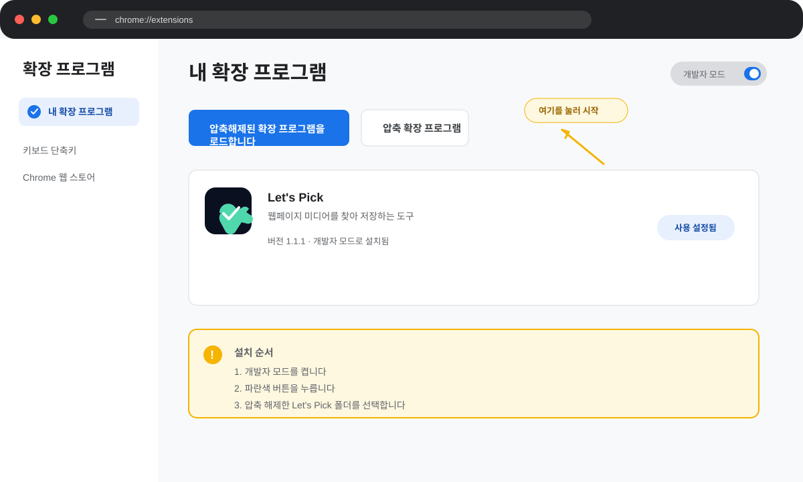

페이지 미디어 탐색
현재 페이지의 이미지·영상·SVG를 자동으로 모아 탭별로 보여줍니다.
DISCOVER · FILTERChromium 확장 프로그램 · v1.1.3
Let's Pick은 지금 보고 있는 페이지의 이미지·영상·SVG를 찾아 한눈에 보여줍니다. 원본 주소와 메타데이터를 확인하고, 필요한 형식으로 저장할 수 있어요.
Chrome · Edge · Whale · Brave · Vivaldi 지원 · 무료 오픈소스
WHAT YOU CAN PICK
개발자 도구를 열고 코드를 헤매지 않아도 됩니다. 알트클릭 한 번으로 페이지 안의 미디어를 수집하고, 필요한 파일만 골라보세요.
현재 페이지의 이미지·영상·SVG를 자동으로 모아 탭별로 보여줍니다.
DISCOVER · FILTER파일명, 원본 용량, 가로·세로 크기, 해상도, 포맷, 주소를 함께 확인합니다.
NAME · SIZE · FORMAT이미지는 JPG·PNG·WebP, 영상은 지원 가능한 원본 형식으로 저장합니다.
JPG · PNG · WEBP · MP4상세페이지처럼 긴 이미지는 가로선을 추가하고 여러 장으로 나눠 내보냅니다.
SLICE · EXPORT선택한 파일을 큰 화면에서 확인하고 앞뒤 항목을 넘겨 비교할 수 있습니다.
PREVIEW · NAVIGATE원본 URL 보기·복사·새창 열기를 통해 다른 작업으로 바로 이어갈 수 있습니다.
COPY · OPEN · SHAREHOW IT WORKS
페이지를 이동할 필요 없이, 보고 있는 콘텐츠 위에서 바로 시작하세요.
이미지나 영상 위에서
Alt 키를 누른 채 클릭
페이지에서 발견한 소스를
유형별로 정리
메타데이터와 원본을
확인하고 필요한 항목 선택
URL 복사 또는 파일 저장
다음 작업으로 바로 이동
작은 팁 이미지가 여러 장인 게시물은 팝업에서 항목을 넘겨가며 각각의 원본과 정보를 확인할 수 있습니다.
GET STARTED
GitHub에서 ZIP을 받고 브라우저에 불러온 뒤, 원하는 페이지에서 바로 사용하세요.
최신 버전 받기 버튼을 눌러 파일을 내려받습니다.
ZIP을 원하는 폴더에 풀어 둡니다.
chrome://extensions에서 개발자 모드를 켜고 압축해제된 확장 프로그램을 불러옵니다.
이미지·영상·SVG가 있는 페이지로 이동합니다.
원하는 미디어 위에서 Alt 키를 누른 채 클릭합니다.
탭을 고르고 URL 보기·복사·저장·변환 기능을 사용합니다.
개발자 모드를 켠 다음, 파란색 버튼을 눌러 압축을 해제한 Let's Pick 폴더를 선택하면 설치가 끝납니다.
chrome://extensions 바로 열기
AT A GLANCE
JPG · PNG · WebP
원본 정보 · 포맷 변환 · 다운로드
페이지가 허용한 원본
URL 확인 · 새창 열기 · 저장
인라인 · 외부 SVG
소스 확인 · 코드 복사 · 저장
긴 상세페이지 이미지
가로선 추가 · 다중 파일 내보내기
LET'S PICK IT